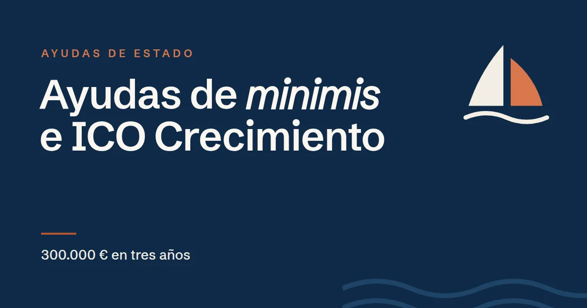

Ayudas de minimis e ICO Crecimiento: por qué te preguntan por tus subvenciones

En resumen
Aunque ICO Crecimiento es un préstamo, el ICO calcula la ayuda pública implícita que contiene: el ahorro frente a un préstamo a precio de mercado.
- Esa ayuda se encuadra en el régimen de minimis o, en inversión, en el régimen europeo de ayudas a pymes.
- El límite general de minimis es de 300.000 € por empresa en tres años (50.000 € en agricultura y 30.000 € en pesca).
- Por eso hay que declarar todas las ayudas de minimis recibidas, también las del grupo.
Basado en el Documento de Condiciones Generales (DCG) de la línea ICO Crecimiento. Las condiciones pueden cambiar y, en caso de duda, prevalece el texto oficial: compruébalo siempre en www.ico.es.
¿Por qué un préstamo lleva una «ayuda»?
El ICO es una entidad pública. Cuando presta a un tipo inferior al que se considera de mercado según la normativa europea, la diferencia cuenta como ayuda de Estado, aunque sea pequeña. El ICO la calcula comparando el tipo aprobado con un tipo de referencia fijado por la Comisión Europea según la solvencia de la empresa y las garantías, y la refleja en el contrato.
En muchas operaciones esa ayuda es pequeña o nula, pero hay que comprobar que cabe dentro de los límites europeos.
Qué régimen se aplica
| Finalidad del préstamo | Régimen de ayudas |
|---|---|
| Circulante | Solo minimis (Reglamento UE 2023/2831) |
| Compra de participaciones | Solo minimis |
| Inversión | Régimen de ayudas a pymes del Reglamento UE 651/2014 o minimis |
En inversión, el régimen de ayudas a pymes permite una ayuda de hasta el 20 % de los costes en las pequeñas empresas y hasta el 10 % en las medianas. Para ese régimen se firma además una declaración específica.
Los límites de minimis
- 300.000 € por empresa en cualquier periodo de tres años, con carácter general.
- 50.000 € para las empresas del sector agrícola.
- 30.000 € para el sector de la pesca y la acuicultura.
Son importes de ayuda, no de préstamo: lo que cuenta es la ayuda implícita calculada, no el nominal. El límite se aplica a la «única empresa», es decir, sumando las empresas del mismo grupo. En fusiones y adquisiciones se suman las ayudas previas de las empresas que se unen.
Qué hay que declarar
La solicitud incluye una declaración de ayudas de minimis en la que hay que indicar las recibidas en los tres años anteriores, por la empresa y por su grupo: organismo, fecha, importe y si fue préstamo, subvención o garantía. Muchas pymes han recibido ayudas de minimis sin saberlo: por ejemplo, el Kit Digital se concedió en este régimen, como muchas subvenciones autonómicas y locales.
La empresa también se compromete a no superar el límite en los tres años siguientes, sumando la ayuda del préstamo del ICO.
Qué puede pasar si te acercas al límite
- El importe o el plazo del préstamo pueden quedar limitados para no superar el tope de ayuda.
- La empresa puede pedir al ICO un tipo de interés más alto, precisamente para reducir la ayuda implícita y no agotar el margen de minimis que necesite para otras subvenciones.
- Un préstamo puede dividirse en tramos acogidos a regímenes distintos.
Recomendación práctica
Antes de solicitar, haz una lista de todas las ayudas públicas de los últimos tres años, de la empresa y del grupo, con sus resoluciones. Si piensas pedir otras subvenciones próximamente, tenlo en cuenta: lo que consuma ICO Crecimiento del límite de minimis no estará disponible para ellas.
Preguntas frecuentes
¿ICO Crecimiento es una ayuda de minimis?
El préstamo puede incluir una ayuda implícita: el ahorro frente a un préstamo a precio de mercado. En circulante y compra de participaciones se encuadra en el régimen de minimis; en inversión, en el régimen de ayudas a pymes del Reglamento 651/2014 o en minimis.
¿Cuál es el límite de las ayudas de minimis?
Con carácter general, 300.000 € por empresa (sumando su grupo) en cualquier periodo de tres años. Para el sector agrícola el límite es de 50.000 € y para la pesca y la acuicultura, de 30.000 €.
¿El Kit Digital cuenta como ayuda de minimis?
Sí, el Kit Digital se concedió en régimen de minimis, así que hay que incluirlo en la declaración si se recibió en los tres años anteriores.